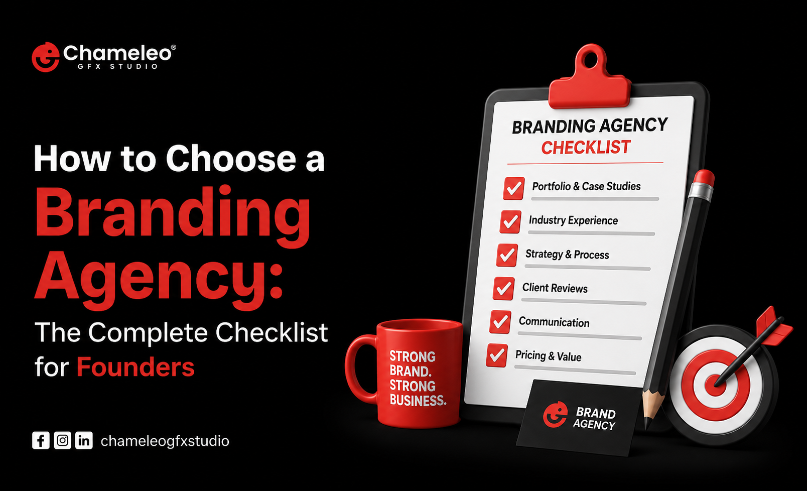

How to Choose a Branding Agency: The Complete Checklist for Founders

You've built a product people actually want. Your team is sharp, your numbers are moving in the right direction, and now you're staring at a bigger problem: nobody outside your circle knows you exist, or worse, they know you exist, and they still don't remember your name.
That's where a branding agency comes in. But here's the catch nobody tells founders before they start Googling "best branding agency near me": most agencies sound identical on paper. Every website promises "strategic thinking," "bold creative," and "measurable results." Every portfolio looks polished. So how do you actually tell the difference between an agency that will transform your business and one that will hand you a nice logo and an invoice?
This guide breaks down exactly how to choose a branding agency, using the same checklist we'd hand a founder sitting across the table from us. No fluff, no agency-speak, just the questions and red flags that separate a real branding partner from a design shop wearing a branding agency's clothes.
By the end, you'll know precisely what to look for, what to ask, and what to avoid, so your next branding investment actually pays off.
This checklist comes from the same evaluation criteria we use at Chameleo GFX Studio, a full-service branding, web development, and digital marketing agency that's worked with founders across India, the USA, the UK, the UAE, Canada, and Australia. We've sat on both sides of this conversation, pitching founders and watching what separates a smart hire from a costly mistake, so consider this the inside version of the checklist.
Table of Contents
- What Is a Branding Agency (And What It Isn't)
- Why Choosing the Right Branding Agency Matters More Than You Think
- The Founder's Checklist: 10 Things to Evaluate Before
You Sign
- Strategic Thinking, Not Just Visual Design
- Industry Experience vs. Fresh Perspective
- Portfolio Depth and Range
- Their Process, Documented
- Team Structure and Who You'll Actually Work With
- Pricing Model and Transparency
- Timeline Realism
- Client References, Not Just Testimonials
- Post-Launch Support
- Cultural and Communication Fit
- Branding Agency vs. Freelancer vs. In-House: A Comparison
- Red Flags to Watch For
- Questions to Ask on Your Discovery Call
- Common Mistakes Founders Make
- FAQs
- Key Takeaways
- Conclusion
What Is a Branding Agency (And What It Isn't)
A branding agency is a company that develops your business's identity, positioning, voice, and visual system so that your brand is instantly recognizable, trusted, and differentiated in the market. This includes strategy, naming, logo design, messaging, brand guidelines, and often the digital assets that carry the brand into the world.
A branding agency is not the same as:
- A graphic design freelancer who makes logos
- A marketing agency that runs ads
- A web development shop that builds websites
- A PR firm that pitches journalists
These can all overlap, and many full-service agencies offer several of these under one roof. But branding, at its core, is strategic work. It addresses "why should anyone care?" before addressing "what should it look like?"
Quick definition: Branding is the strategic foundation (positioning, voice, promise). Visual identity is the expression of that foundation (logo, colors, typography). A good branding agency delivers both, in that order.
Why Choosing the Right Branding Agency Matters More Than You Think?
Founders often treat branding as a one-time purchase, like buying a new company laptop. It isn't. Your brand becomes the lens through which every future customer, investor, and employee evaluates you.
Here's what's actually at stake:
- First impressions compound. A weak or generic brand makes every other marketing dollar work harder to overcome doubt.
- Rebranding is . Fixing a poorly built brand two years later costs significantly more than getting it right the first time, in both money and lost momentum.
- Your brand is a hiring tool. Strong brands attract stronger talent because people want to work somewhere with clear purpose and identity.
- Investors notice. A sharp, well-positioned brand signals that a founder thinks clearly, which builds confidence during fundraising conversations.
Pro Tip: If you're planning to raise a funding round, refresh a stale identity, or launch into a new market in the next 12 months, that's usually the right window to invest in branding, not after the launch has already underwhelmed.
The Founder's Checklist: 10 Things to Evaluate Before You Sign
This is the core of the decision. Walk through each point before you sign a contract or wire a deposit.
1. Strategic Thinking, Not Just Visual Design
Ask to see their strategy documents, not just final logos. A top branding agency will show you positioning frameworks, competitive audits, and messaging architecture as part of their process, not as an afterthought tacked onto a mood board.
If every case study jumps straight from "kickoff call" to "final logo reveal," that's a sign the agency skips strategy entirely.
2. Industry Experience vs. Fresh Perspective
Experience in your exact industry can be valuable, but it isn't mandatory. What matters more is whether the agency has worked across a range of business models and can demonstrate strategic range.
Consider this trade-off:
- An agency deeply embedded in your industry may bring faster context but risks repeating the same visual conventions everyone else in your space already uses.
- An agency with cross-industry experience may take slightly longer to ramp up but often delivers sharper differentiation because they aren't anchored to category norms.
3. Portfolio Depth and Range
Don't just scroll the highlight reel. Look for:
- Variety across industries and business sizes
- Evidence of full brand systems, not just logos (think packaging, web, social, signage)
- Before-and-after context, showing what changed and why
- Recent work, ideally from the past 18 to 24 months
Common mistake: Judging an agency purely on whether you personally like the aesthetic of their portfolio. Your job is to evaluate whether their thinking process ?ts your brand, not whether their past clients share your taste.
4. Their Process, Documented
Ask this directly: "Walk me through your process from kickoff to delivery."
A mature agency will have a clear, repeatable framework, typically something like:
- Discovery and research
- Positioning and strategy
- Naming (if applicable)
- Visual identity development
- Brand guidelines
- Application and rollout support
If the answer is vague or improvised, that's a signal their delivery may be inconsistent too.
5. Team Structure and Who You'll Actually Work With
Many agencies sell you on senior talent during the pitch, then hand your project to junior staff once the contract is signed. Ask specifically:
- Who will be my day-to-day point of contact?
- Who is doing the strategic work versus the execution?
- Will the same team stay on the project from start to finish?
6. Pricing Model and Transparency
Branding agency pricing varies widely, from a few thousand dollars for a lean startup package to six figures for full enterprise rebrands. What matters isn't the number itself; it's the clarity behind it.
| Pricing Model | What It Means | Best For |
|---|---|---|
| Fixed project fee | One price for defined deliverables | Founders who want budget certainty |
| Phased pricing | Pay per stage (strategy, then identity, then rollout) | Founders who want flexibility to pause |
| Retainer | Ongoing monthly fee for continuous brand support | Companies needing a long-term brand management |
| Hourly | Billed by time spent | Small, undefined scopes only |
Pro Tip: Ask what happens if the scope changes mid-project. A trustworthy agency has a clear change-order process instead of vague "we'll figure it out" answers.
7. Timeline Realism
A full brand identity project typically takes 6 to 12 weeks, depending on scope. If an agency promises a complete brand system in 5 days, that's not efficiency; that's a shortcut that usually skips strategy entirely.
8. Client References, Not Just Testimonials
Testimonials on a website are curated. Ask for two or three direct client references you can actually call. Good questions to ask a reference:
- Did the agency hit deadlines?
- Did the final brand match the strategy they proposed?
- Would you hire them again?
9. Post-Launch Support
Branding doesn't end at delivery. Ask what happens after the guidelines are handed over:
- Do they offer implementation support across your website, social, and marketing materials?
- Is there a retainer option for ongoing brand consistency checks?
- Who do you call if your team misapplies the brand six months later?
10. Cultural and Communication Fit
This one is easy to underestimate. You'll be in weekly calls with this team for months. If the communication style feels slow, defensive, or overly formal during the sales process, that dynamic rarely improves once the contract is signed.
Branding Agency vs. Freelancer vs. In-House: A Comparison
| Factor | Branding Agency | Freelancer | In-House Team |
|---|---|---|---|
| Strategic depth | High, dedicated strategists | Varies widely | Depends on hires |
| Speed | Moderate, structured process | Fast but inconsistent | Slowest to build from scratch |
| Cost | Mid to high | Low to mid | High (salaries, benefits) |
| Range of skills | Broad (strategy, design, dev, copy) | Narrow, usually one skill set | Depends on team size |
| Best for | Startups scaling fast, rebrands, fundraising prep | Small budgets, single deliverables | Large companies with ongoing brand needs |
| Risk | Lower, accountability built in | Higher, dependent on one person | Lower long-term, higher upfront cost |
Red Flags to Watch For
Keep an eye out for these warning signs during your search:
- No discovery process. They jump straight to design concepts without asking about your business, customers, or competitors.
- Unrealistic guarantees. Nobody can promise your brand will "go viral" or "10x conversions."
- No written contract or scope document. Verbal agreements lead to scope creep and disputes.
- Heavy upsell pressure. Constant push toward add-ons before the core deliverable is even finished.
- Radio silence after the pitch. If communication is slow before you're a paying client, expect it to get worse afterward.
- Cookie-cutter deliverables. If every client ends up with a suspiciously similar visual style, the agency is applying a template rather than a strategy.
Questions to Ask on Your Discovery Call
Bring this list to your first conversation with any agency you're considering:
- What does your discovery and strategy phase actually involve?
- Can you show me a project where the final brand looked nothing like the initial direction, and explain why it changed?
- Who specifically will work on my account?
- What's your average project timeline, and what could extend it?
- How do you measure whether a brand launch was successful?
- What happens if I'm not happy with the initial concepts?
- Do you offer support after the brand guidelines are delivered?
- Can I speak with two past clients directly?
Common Mistakes Founders Make
- Choosing based on price alone. The cheapest option often ends up costing more later in the form of a rebrand nobody asked for.
- Skipping strategy to save time. Founders eager to "just get the logo done" often end up with a brand that doesn't hold up as the company scales.
- Not involving the right stakeholders early. Bringing in co-founders or key hires only after the brand is finalized leads to internal pushback and rework.
- Treating branding as marketing. Branding is the foundation; marketing is what you build on top of it. Confusing the two leads to inconsistent messaging.
- Ignoring brand guidelines after launch. A beautiful brand system falls apart fast if nobody enforces consistency across channels.
FAQs
Key Takeaways
- A branding agency should lead with strategy, not just visuals.
- Portfolio range matters more than portfolio style.
- Always confirm who you'll actually be working with day-to-day.
- Pricing transparency and a documented process are non-negotiable.
- Client references reveal more than testimonials ever will.
- Post-launch support determines whether your brand stays consistent long-term.
- Avoid agencies that skip discovery or make unrealistic promises.
- Cultural fit and communication style during the pitch predict the working relationship.
Conclusion
Choosing a branding agency is one of the highest-leverage decisions a founder makes, right up there with hiring your first few key employees. Get it right, and your brand becomes an asset that compounds in value with every customer interaction, every hire, and every investor conversation. Get it wrong, and you're stuck patching a weak foundation while trying to grow on top of it.
Use this checklist as your filter. Ask the hard questions early, push past the polished pitch decks, and pay close attention to how an agency thinks, not just what they've designed before.
If you're currently evaluating agencies and want a second opinion on a proposal you've received, or you'd simply rather skip the guesswork and talk to a team that leads with strategy first, Chameleo GFX Studio would love to be part of that conversation. We build brand strategy, identity, and digital presence under one roof, so nothing gets lost in translation between your brand and the website or marketing built on top of it.
Book a discovery call with Chameleo GFX Studio and let's talk about where your brand needs to go next. The right conversation now can save you a costly rebrand later.